STAR DATABASE
Co to jest gwiazda?
Wikipedia: "Gwiazda – kuliste ciało niebieskie, stanowiące skupisko powiązanej grawitacyjnie materii."
Powyższy tekst pochodzi z znanej, wśród ludzi szukających wiedzy, strony internetowej i oddaje on dokładny
opis
obiektów, które nazywamy gwiazdami. Dla nas są one odległymi punktami, które zachwycają nas swoim wyglądem,
a
ważnym aspektem
ich podziwiania powinna być dokładniejsze wiedza i chęć zrozumienia w jaki sposób działają.
Gwiazdą zasługującą na szczególny szacunek jest Słońce. Jest to gwiazda centralnego Układu Słonecznego,
wokół której krążą planety, planety karłowate oraz małe ciała Układu Słonecznego.
Słońce składa się z gorącej plazmy utrzymywanej przez grawitację i kształtowanej przez pole magnetyczne.
Gwiazda ta jest prawie idealnie kulista. Ma średnicę około 1 392 684 km(3) jego
masa to 1,989 × 1030 kg. Słońce jest głównym obiektem układi i stanowi około 99,86% jego całkowitej
masy.
W większości Słońce składa sie w dużej mierze z wodoru mniejszej z helu a pozostałe pierwiastki stanowią
1,69%.
Z pośród cięższych pierwiastków można wymienić m.in. tlen, węgiel, neon i żelazo.
Jednostki używane w aplikacji
Masa: M☉ (masa Słońca)
Jest to najczęściej używana jednostka przy opisywaniu obiektów astronomicznych.
Masa słońca wynosi około 1.9884 x 1030kg czyli 1.9884 kwintyliona kilogramów i jest ponad 330 000 razy
większa od masy Ziemi.
Jasność: L☉ (jasność Słońca)
Jednostka astronomiczna używana do określenia jasności gwiazd. L☉ równa się obecnej jasności bolometrycznej
Słońca: 1 L☉ = 3.827 x 1026 W. Wartość ta określa moc promieniowania elektromagnetycznego rodzimej gwiazdy
we wszystkich zakresach fal, nie tylko tych widzialnych. Emitowana moc Słońca nie jest stała lecz podlega
zmianom w trakcie cyklu słonecznego, ale są one małę w porównaniu z średnią wartością.
Dystans: l.y. (en. light year)
Jednostka odległości stosowana w astronomi. Rok świetly jest to odległość jaką pokona światło w próżni w
ciągu roku juliańskiego (365.25 dni). W przeliczeniu na kilometry odległość ta wynosi około
9 500 000 000 000 km. Jednostka nie ma ustalonego symbolu. Podana jednostka jest używana przez
Międzynarodową Unię Astronimiczną. Podawana wartość w aplikacji odnosi się do odległości miedzy Słońcem
a daną gwiazdą.
Prędkość radialna: km/s
Wartość ta odpowiada prędkości zbliżania się lub oddalania obiektu od obserwatora. Wartości określa się
jako prędkość zmian długości promienia wodzącego, a kierunkiem wzdłuż promienia wodzącego.

r – wersor o kierunku radialnym
W astronomi prędkość radialna to składowa prędkości mierzona między obserwatorem a ciałęm niebieskim. Dla
uproszczenia
obliczeń pomija się ruch obrotowy Ziemi wokół Słońca. Najczęstszą metodą wyznaczania tej wartości jest
analiza widma obiektu,
w którym wyszukuje się regularnych przesunięć lini widmowych spowodowanych efektem Doppplera.
Rektascencja: XX h : YY m : ZZ s
Współrzędna wykorzysywana w astronomi, która określa położenie ciała niebieskiego w układzie współrzędnych
astronomicznych nazywanym układem równikowym równonocnym. Wartość ta określana jest jakokąt dwuścienny
między
płaszczyzną koła godzinnego punktu równonocy wiosennej a płaszczyzną koła godzinnego obiektu. Wspłórzędna ta
jest niezależna od ruchu obrotowego Ziemi.
Deklinacja: XX° : YY′ : ZZ″
Współrzędna określająca położenie ciała niebieskiego w dwóch układach współrzędnych: równonocnym i
godzinnym.
Wasrtości definiujemy jako kąt pomiędzy kierunkiem poprowadzonym od obserwatora do obiektu a płaszczyzną
równika
niebieskiego. Rozważamy dwa zakresy wartości, półkula północna ma wartośći dodatnie, a półkula południowa
ujemne.